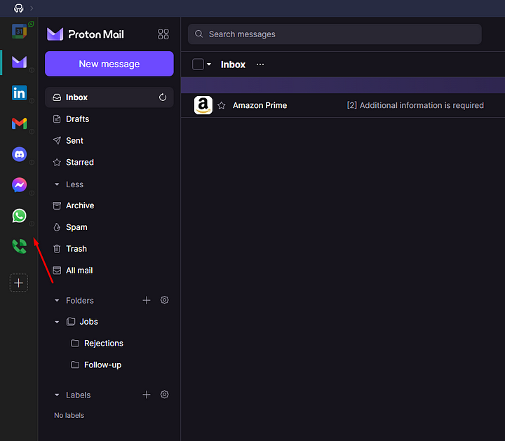
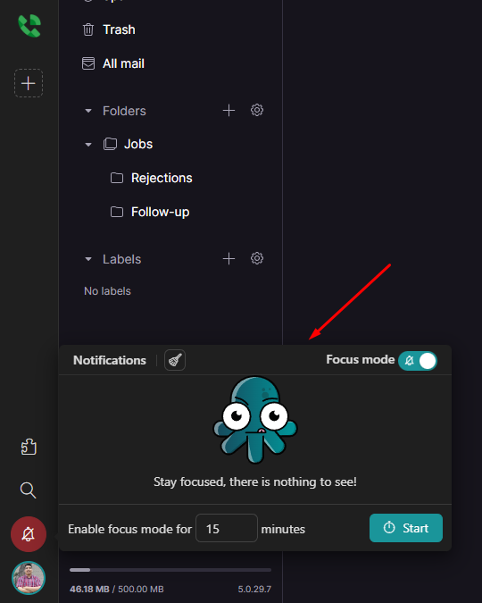
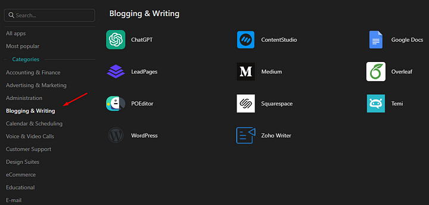
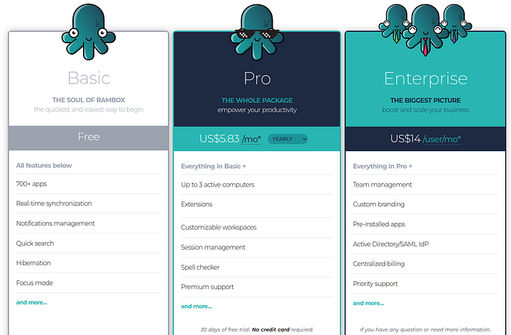
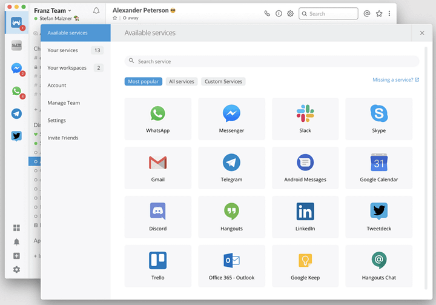
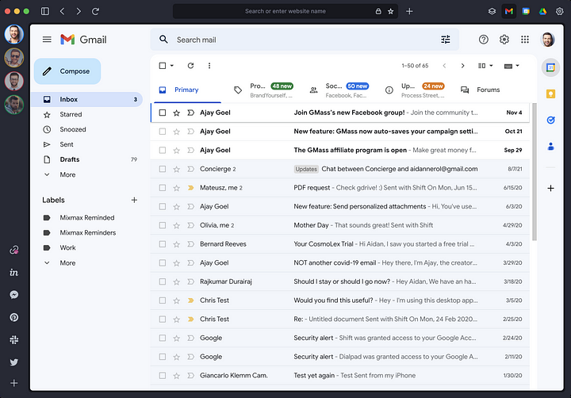
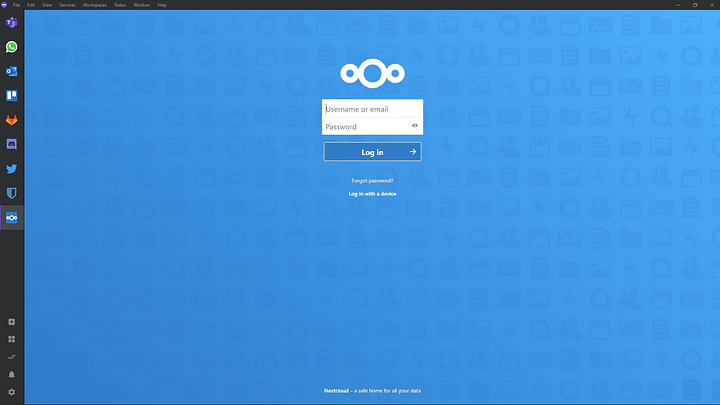

I want to give you a productivity hack I have been using for years. The idea is to combine messaging & email web applications into a static browser to make it seem like it is one app.
This is different from a dynamic browser where each tab is fluid and can be closed individually. The static browser is monolithic and makes all the apps appear to be one.
This is useful for 2 reasons. One, you don't need to open each app and search through everything, saving time. Two, you can organize your notifications to never miss them ever again.
The one I use is called Rambox-a classic. But there are many other alternatives and contemporary workspace managers. These software are highly touted in productivity courses for getting more done in less time.
Here is what they look like:
Screenshot of Rambox
On the left I have my most used apps. All notifications for all apps are lined up and can be turned off and on.
Screenshot of Rambox
At the bottom I have a list of notifications from all my apps. You can choose which apps are going to notify you, make sounds or not make sound.
How Do Apps Like These Work?
All of them wrap a browser Kernal. Rambox wraps Chromium using Electron. They reads HTML/CSS/JS like any other browser then renders the app to the screen. They render with a graphics API just like Chrome, Firefox & others.
The difference is-it is a static browser. Which has specific properties. Instead of simply posting the notifications in a tab, it forwards them to a custom layer of code in Rambox. The client-side Javascript is read and forwarded in a way that is optimized for never missing notifications.
With how useful this has been to me, I can safely make a prediction that static browsers will become more normalized soon. Having all your web apps appear to be one giant software piece is highly efficient.
Perhaps a static mode for browsers-or just a bunch of Rambox remakes available to everyone. Most apps work for these static browsers right out the box.
Take a look:
Screenshot of Rambox
You know what else, Rambox is free and fully featured. In the past it was a little more freemium but with recent updates there is no need to pay.
Why Is This Better Than Bookmarks?
Bookmarks you have to open and organize when opening in your fluid tabs. Ever since I started using Rambox several years ago, I always felt strange and inefficient on other computers.
I am adjusted to seeing all my apps in a row-ready with unread markers to go through all at once.
When shouldn't you use Rambox?
The #1 reason not to use Rambox or any multi-messaging platform is RAM & CPU power. If you are on an ancient PC or laptop-Rambox may be too inefficient. Leaving applications on all the time is RAM heavy.
Much of the time it is not even Rambox's fault. Certain apps like Discord & Outlook are much more CPU intensive than expected. Their creators made a needlessly intense app.
Your applications are not on there
Another reason not to use Rambox is if your applications are not on there. The only apps available are those that are already web applications. If it is not on the web then it is not available.
Is the free plan worth it?
The free plan is totally worth it. If we look at the pricing...
Rambox pricing
The only missing features are syncing between computers, extensions and further customization. For $6/month I would say free is good enough.
When you switch around apps you can just do the same thing across computers. I always just move things around-no problem. The fact they are web apps means each application is already synced.
These are not necessary.
Extensions... Never tried them and never needed them. I feel no FOMO and love Rambox so far.
Other alternatives
In recent years many Rambox alternatives have popped up. The workspace managers out there tend to be free and open-source. Even with self-hosting servers to sync across workspaces.
You use a client and connect to the server-then sync across clients. Newer alternatives to Rambox are very good for business and personal use. Here are some of the best I could find:
Rambox
Our classic free and open source all in one software. For many years this was the #1 competition to beat in the space.
Rambox best features
- Supports unlimited apps all at once
- Supports over 700+ applications-making it support most of them.
- Customization with CSS/JS code
- Credentials are not shared across services. Each app you create is a container.
Rambox limitations
- Does not have synchronization in the free plan
- RAM and CPU heavy as you add more apps.
- Built on Electron (slow and outdated)
Rambox pricing
- Free
- Pro Plan: $7/month per user
- Enterprise Plan: $14/month per user
Franz
Franz and Rambox were leading competitors in the productivity space for years. With the advent of Shift and Kasm this is no longer the case.
I say Franz is the premium version of Rambox. It is closed source and handles less apps.
Franz best features
- Almost all web applications work with Franz
- Account synchronization between PCs.
- Multilingual support enables major languages.
Franz limitations
- Only 3 apps in the free plan. Only 6 in the personal plan.
- Ads on free version
- No good mobile versions
Franz pricing
- Free
- Personal: $2.99/month
- Professional: $5.99/month
Shift
Shift is a newer competitor to Rambox and Franz. It is jam packed with up to date implementation and performance. It supports all the same apps as Rambox.
In addition it acts as a normal browser with a sidebar implementation of static apps.
Shift best features
- All web applications work with Shift
- Functions as a regular browser
- Works with Chrome extensions
- Places notifications all in one place just like Rambox
- No ads
Shift limitations
- Not available on Linux
- Expensive premium versions
- No mobile versions
Shift pricing
- Free
- Advanced: $149/Year
- Team: $149 per user/Year
Station

Station is a more featured free version of Rambox. Issue is-its old. It was taken out of production and placed into open-source in August 2021. Since then many hands have touched it.
Today although it is more featured it is also more glitchy. The issues section has many open issues developers are not fixing. Good if you want to contribute and learn Typescript. Bad if you want a solid replacement of Rambox.
Given it is Electron with the same layout-it will be equal in performance. It will also use static app placements.
Station best features
- All web applications are supported
- Open-source
- More features than Rambox free version
- Completely free
Station limitations
- Uses Electron (Slower)
- No mobile versions
Station pricing
- Free forever
Ferdium
Ferdium is a fork of Franz. Always free and open source. Ferdium functions the same as Rambox and Franz. It does not include normal browser functionality like Shift. It is available on Linux, open-source-viewable on GitHub.
Ferdium best features
- All web applications work with Shift
- Free and open source
- Syncs across devices
- No ads
Ferdium limitations
- Does not function as a regular browser
- No mobile versions
Ferdium pricing
- Free forever
These alternatives are all the same
Each of these are Rambox clones-they do the same thing. These alternatives use the same type of API and are usually Electron.
However-Shift and Kasm appear to give more features. If you look at their demos they look the same as Rambox. They include those server client synchronization services I talked about.
You download the dedicated server binary-run it then manage your Workspace clients on the server. They are the same as any other client-server model.
No compute is done by the vendor and you have to dedicate your own compute. It is a very good way to create a synced workspace for multiple PCs or users.
FAQ
Will Rambox ever be out of date?
Yes. Rambox is already going out of date. In fact I recommend checking out the alternatives. I am just a boomer who has been using Rambox for 4 years at this point.
Its hardly changed during that time while all these new up and comers are rocketing with features.
Why wouldn't I just use a browser?
Workspace managers are browsers. They are just a different type of browser. That static nature is a solution for someone that wants to check everything all at once.
But you are right. What is the difference? There is none. You just have all your notifications filtered and forwarded in one place. If you decide to use a browser with this built in like the Shift browser-then Rambox becomes useless.
Are workspace managers slower than regular browsers?
Rambox in particular uses more RAM than a regular browser. Yep yep-there is some overhead. But it is an electron thing-not even a chromium issue.
If you use Shift or Kasm and its not Electron-then it will be the same speed as a regular browser.